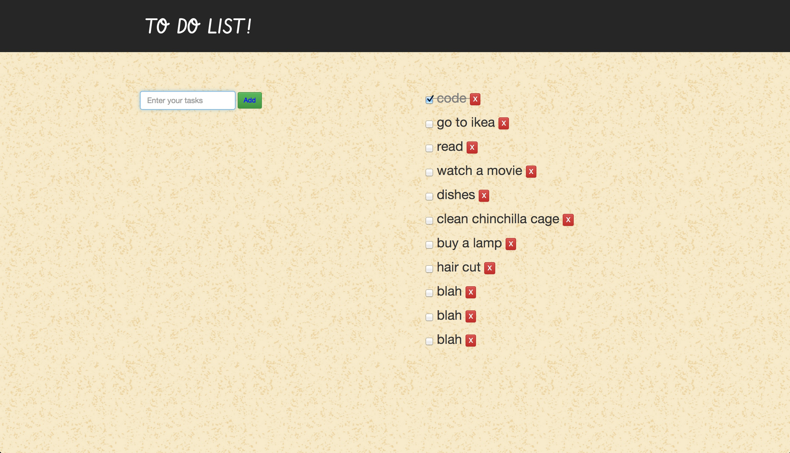

Connie Chang
Full-Stack Web Developer

TV Party
Backyard App
Sounddrop
To Do List
Shape Visualizer
TV-Party
Chat about your favorite TV shows while you view the related twitter feed. Built with Node.js, Socket.io, Passport, Twitter Oauth, and uses Hulu's popular shows as seed data. This was a weeklong two person project completed in Sept. 2014.
Live Site>> Github>>Backyard App
Taking inspiration from Airbnb, the purpose of the site is to recreate a booking site where people can rent out their backyards and pools. Built with Ruby, Rails, Mapbox API, Javascript, jQuery, AJAX, Bootstrap, Handlebars, Rspec, web scraping with Nokogiri, and data seeding with Ffaker. This was a week long four person group project completed in Sept. 2014.
Live Site>> Github>>Sounddrop
Search for songs on Soundcloud and create your own playlists using hashtags. Built with Node.js, Express, Soundcloud API, PostgreSQL, Sequelize, and Passport for authentication and authorization. This was a week long solo project in Aug. 2014.
Live Site>> Github>>Sounddrop
Search for songs on Soundcloud and create your own playlists using hashtags. Built with Node.js, Express, Soundcloud API, PostgreSQL, Sequelize, and Passport for authentication and authorization. This was a week long solo project in Aug. 2014.
Live Site>> Github>>

Shape Visualizer
A music visualizer which spins different shapes you can select based on the average volume of the frequencies. This was built using Canvas, Paper.js, and the Soundcloud API.
Github>>Resume
Contact
About Me
I graduated from U.C. Berkeley with a degree in Business Administration and began my career in accounting/finance, but am so happy to be coding now! My proudest accomplishments are now the apps I've built over just the last few months, so I’m excited to continue on learning and building. I hope to be part of a collaborative team and take on challenging tasks.
Languages: HTML, CSS, JavaScript, Ruby
Frameworks: Node.js, Express, Rails, AngularJS
Interests: Graphic Design, Music, Photography, Lightweight-hiking, Chinchillas